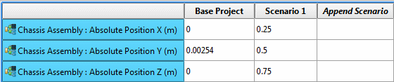
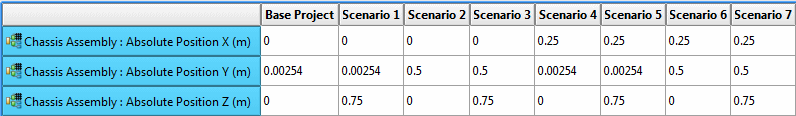

One scenario is created for each unique
combination of input variable values.
Restrictions and Limitations
Video
Learn how to create scenarios that cover all combinations of
input variables:
Procedure
- Choose to
open the Multiply Variables dialog box.
A list of available input variables is shown in the
Input Variable Selection pane.
- Select
one or more input variables and click >>
The selected input variables are moved to the Selected
Input Variables pane.
- Click OK.
Results
The current values list for
all the input variables is updated in the Input Variables panel and
the scenarios created are added to the Scenario Table.
Examples
Figure 1 shows an example where
there are three input variables values defined in a scenario.
Figure 1. Scenario
Table Before a Multiply Variables
Figure 2 shows the effect of “multiplying”
those three input variables values to produce one scenario for each
combination, that is, a total of seven scenarios.
Figure 2. Scenario
Table After a Multiply Variables